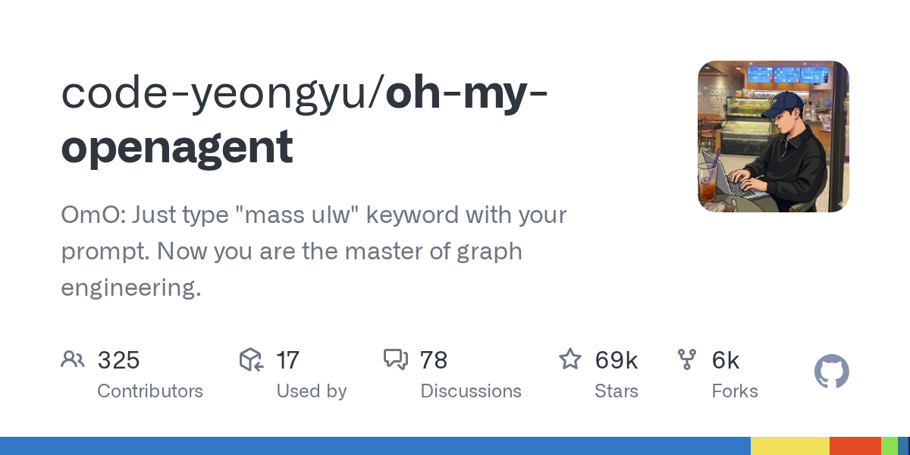

07 GitHub
code-yeongyu/oh-my-openagent
코딩 AI 여러 개를 한 흐름으로 묶는 도구
★ 68,825이번 주 +65TypeScript미표기 확인 필요릴리스 v5.0.0-beta.49 (09.08)최근 활동 09.08테스트 있음예제 없음AGENTS.md 있음

이 저장소는 코딩 에이전트를 한 가지에 묶지 않고 여러 모델과 실행 환경을 조합해 쓰려는 도구다. 설치판도 하나가 아니다. OpenCode용, Codex CLI용, 독립형 베타로 나뉜다. 문서는 개발자 생산성에 초점을 맞췄고, 사내 일반 업무 도구로 바로 읽히는 설명은 많지 않다.
무엇을 하는 물건인가
Oh My OpenAgent는 코딩용 AI 에이전트 여러 개를 한 작업 흐름으로 묶는 도구다. 사용자는 OpenCode나 Codex CLI 같은 기존 환경에 플러그인으로 얹거나, 독립형 베타를 따로 설치할 수 있다. 도구가 워크플로를 미리 짜 두고 모델 연결과 훅, 명령을 한데 묶어 준다. 팀별로 쓰는 결재 양식과 체크리스트를 표준 서식으로 맞춰 배포하는 일과 비슷하다.
스펙과 도입 조건
- TypeScript 기반 저장소다.
- OpenCode용 Ultimate, Codex CLI용 Light, 독립형 Senpi 베타의 세 가지 판을 제공한다.
- Ultimate와 Light는 기존 호스트에 붙는 플러그인이고, Senpi는 standalone 방식이다.
- Node/npm 환경을 쓰는 설치 경로가 있으며, 일부 경로는 Bun을 사용한다.
- 제공자별 인증이 필요하며 Anthropic, Gemini, Copilot, Z.ai, OpenCode Zen 관련 설정을 다룬다.
- 라이선스는 NOASSERTION으로 표시돼 있어 확인이 필요하다.
- 최신 릴리스는 v5.0.0-beta.49다.
이럴 때 쓰면 좋다
- 개발 플랫폼 팀이 OpenCode와 Codex CLI를 함께 쓰면서 설치 절차와 팀 표준 설정을 맞출 때 검토할 수 있다.
- 사내 개발자가 장시간 코딩 작업을 여러 에이전트와 모드로 나눠 자동 진행할 실험 환경이 필요할 때 맞다.
- 파일 탐색, 코드 점검, 팀 모드 같은 보조 기능을 한 설치 흐름으로 묶고 싶을 때 후보가 된다.
핵심 기능
- OpenCode용 Ultimate, Codex CLI용 Light, 독립형 Senpi 베타를 나눠 제공한다.
- Team Mode, /goal, ultrawork 같은 작업 모드를 포함한다.
- 내장 MCP와 각종 라이프사이클 훅으로 호스트 환경에 기능을 붙인다.
대안 대비 차별점
이 저장소는 한 코딩 에이전트만 강화하는 방식보다, 여러 호스트와 여러 모델을 오케스트레이션(여러 도구를 묶어 제어)하는 데 무게를 둔다. OpenCode에는 기능이 많은 Ultimate를, Codex CLI에는 제약에 맞춘 Light를 따로 낸 점이 눈에 띈다. 독립형 Senpi 베타도 있어 호스트 없이 쓰는 경로를 열어 뒀다. 대신 설치 경로와 명령 이름이 바뀌는 과도기 설명이 길어, 도입 난도는 낮지 않다.
사내 도입 체크
- 제공자별 인증과 구독 확인이 들어가므로 외부 API 호출이 사실상 전제된다.
- 텔레메트리가 기본 활성화라고 밝혀서, 사내 정책과 맞는지 먼저 봐야 한다.
- 유지보수는 개인 사이드 프로젝트라고 적혀 있다.
- 상용 코딩 보조 도구를 일부 대체할 수 있으나, 비개발 부서용 상용 제품 대체 여부는 확인 필요다.
주요 용어
원문 정보
제목: code-yeongyu/oh-my-openagent
최근 활동: 2026.09.08